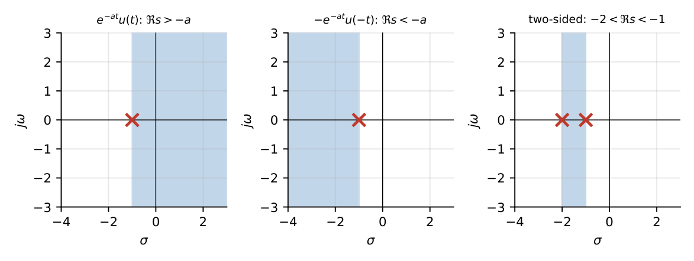
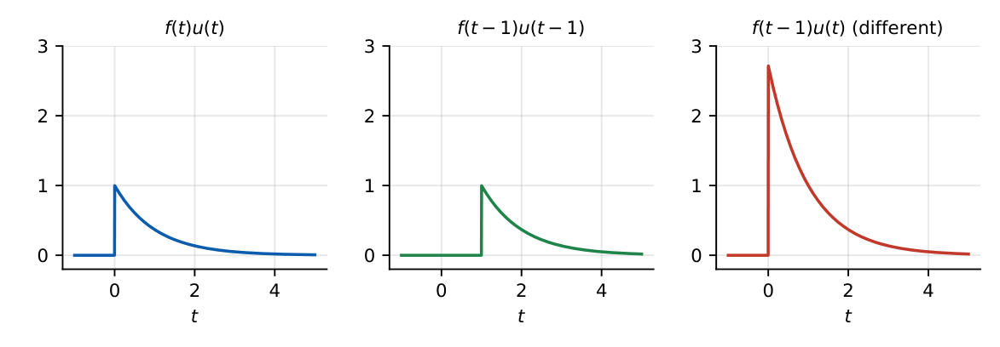

Laplace Transform
In this chapter
Standard pairs, time shift, differentiation, initial- and final-value theorems, inverse transform by partial fractions, ROC. Expect one direct 1-mark question and one 2-mark inverse/theorem question.
11.1 Motivation for the Laplace transform
Differential equations in time become algebraic equations in \(s\); initial conditions are built in; convolution becomes multiplication; and \(s=\sigma+j\omega\) gives a picture (poles and zeros) of stability and frequency response. The Fourier transform is the special case \(s=j\omega\) when the \(j\omega\) axis is in the region of convergence.
11.2 Definition
Bilateral: \(X(s)=\displaystyle\int_{-\infty}^{\infty}x(t)e^{-st}\,dt\). Unilateral: \(X(s)=\displaystyle\int_{0^-}^{\infty}x(t)e^{-st}\,dt\).
The lower limit \(0^-\) means an impulse at \(t=0\) is included. The region of convergence (ROC) is the set of \(s\) for which the integral converges.
11.3 Bilateral and unilateral Laplace transforms
The unilateral transform ignores \(x(t)\) for \(t<0\) and is used for causal signals and initial-value problems (its ROC is always a right half-plane). The bilateral transform needs the ROC to specify the signal uniquely.

\(1/(s+a)\) alone does not identify the signal: \(e^{-at}u(t)\) and \(-e^{-at}u(-t)\) both give \(1/(s+a)\) with different ROCs. Right-sided \(\Leftrightarrow\) ROC to the right of the rightmost pole; left-sided \(\Leftrightarrow\) to the left of the leftmost pole; two-sided \(\Leftrightarrow\) a vertical strip.
11.4 Basic transform pairs
| \(x(t)\) (\(t\ge0\)) | \(X(s)\) | ROC |
|---|---|---|
| \(\delta(t)\) | \(1\) | all \(s\) |
| \(u(t)\) | \(1/s\) | \(\Real s>0\) |
| \(t\,u(t)\) | \(1/s^2\) | \(\Real s>0\) |
| \(\dfrac{t^n}{n!}u(t)\) | \(1/s^{n+1}\) | \(\Real s>0\) |
| \(e^{-at}u(t)\) | \(\dfrac1{s+a}\) | \(\Real s>-\Real a\) |
| \(t\,e^{-at}u(t)\) | \(\dfrac1{(s+a)^2}\) | \(\Real s>-\Real a\) |
| \(\sin\omega_0t\,u(t)\) | \(\dfrac{\omega_0}{s^2+\omega_0^2}\) | \(\Real s>0\) |
| \(\cos\omega_0t\,u(t)\) | \(\dfrac{s}{s^2+\omega_0^2}\) | \(\Real s>0\) |
| \(e^{-at}\sin\omega_0t\,u(t)\) | \(\dfrac{\omega_0}{(s+a)^2+\omega_0^2}\) | \(\Real s>-a\) |
| \(e^{-at}\cos\omega_0t\,u(t)\) | \(\dfrac{s+a}{(s+a)^2+\omega_0^2}\) | \(\Real s>-a\) |
| \(\sinh\beta t\,u(t)\), \(\cosh\beta t\,u(t)\) | \(\dfrac{\beta}{s^2-\beta^2}\), \(\dfrac{s}{s^2-\beta^2}\) | \(\Real s>\beta\) |
| \(t\sin\omega_0t\,u(t)\), \(t\cos\omega_0t\,u(t)\) | \(\dfrac{2\omega_0s}{(s^2+\omega_0^2)^2}\), \(\dfrac{s^2-\omega_0^2}{(s^2+\omega_0^2)^2}\) | \(\Real s>0\) |
11.5 Properties
| Property | Time domain | \(s\)-domain |
|---|---|---|
| Linearity | \(ax_1+bx_2\) | \(aX_1+bX_2\) |
| Time shift | \(x(t-t_0)u(t-t_0)\) | \(e^{-st_0}X(s)\) |
| Frequency shift | \(e^{-at}x(t)\) | \(X(s+a)\) |
| Time scaling | \(x(at)\), \(a>0\) | \(\frac1aX(s/a)\) |
| Differentiation | \(\dfrac{dx}{dt}\) | \(sX(s)-x(0^-)\) |
| 2nd derivative | \(\dfrac{d^2x}{dt^2}\) | \(s^2X(s)-sx(0^-)-\dot x(0^-)\) |
| Integration | \(\displaystyle\int_{0^-}^tx(\tau)d\tau\) | \(X(s)/s\) |
| \(s\)-differentiation | \(t\,x(t)\) | \(-dX/ds\) |
| Convolution | \(x_1*x_2\) | \(X_1(s)X_2(s)\) |
| Periodic (\(T\)) | \(x(t)\), \(x_1\) = one period | \(\dfrac{X_1(s)}{1-e^{-sT}}\) |

\(e^{-2t}u(t)\to\dfrac{1}{s+2}\). \(u(t-2)\to\dfrac{e^{-2s}}{s}\). \((t-1)u(t-1)\to\dfrac{e^{-s}}{s^2}\). \(te^{-3t}u(t)\to\dfrac1{(s+3)^2}\). \(\sin2t\,u(t)\to\dfrac{2}{s^2+4}\).
11.6 Initial-value theorem
\(x(0^+)=\displaystyle\lim_{s\to\infty}sX(s)\) (requires \(X(s)\) strictly proper: degree of numerator \(<\) degree of denominator; else \(X\) contains impulses).
11.7 Final-value theorem
\(x(\infty)=\displaystyle\lim_{s\to0}sX(s)\), valid only if all poles of \(sX(s)\) lie in the open left half plane (a single pole at \(s=0\) in \(X\) is allowed).
\(X(s)=\dfrac{s+3}{s(s+1)(s+2)}\). \(sX(s)=\dfrac{s+3}{(s+1)(s+2)}\): \(x(0^+)=\lim_{s\to\infty}=0\); \(x(\infty)=\dfrac{3}{2}=1.5\). Inverse: \(x=1.5-2e^{-t}+0.5e^{-2t}\) (indeed \(x(0)=0\), \(x(\infty)=1.5\)).
The final-value theorem fails for \(X(s)=\dfrac{1}{s^2+4}\) (poles on the \(j\omega\) axis; \(\sin2t\) has no limit) and for \(X(s)=\dfrac1{s-1}\) (growing exponential). The formula would still give a number (\(0\) and \(0\)) but it would be meaningless.
11.8 Inverse Laplace transform
Use partial fractions and the table.
- Distinct real poles: \(\dfrac{N}{(s+p_1)(s+p_2)}=\dfrac{A_1}{s+p_1}+\dfrac{A_2}{s+p_2}\), \(A_k=\left[(s+p_k)X(s)\right]_{s=-p_k}\).
- Repeated poles: \(\dfrac{A_1}{s+p}+\dfrac{A_2}{(s+p)^2}\), \(A_2=[(s+p)^2X]_{s=-p}\), \(A_1=\dfrac{d}{ds}[(s+p)^2X]_{s=-p}\).
- Complex poles: complete the square and use \(e^{-at}\sin/\cos\) pairs.
- Improper (\(m\ge n\)): divide first; the quotient gives \(\delta(t)\) terms.
\(X(s)=\dfrac{1}{s(s+1)^2}=\dfrac1s-\dfrac1{s+1}-\dfrac1{(s+1)^2}\Rightarrow x(t)=1-e^{-t}-te^{-t}\).
\(X(s)=\dfrac1{s^2+2s+5}=\dfrac12\cdot\dfrac{2}{(s+1)^2+2^2}\Rightarrow x(t)=\tfrac12e^{-t}\sin2t\,u(t)\).
\(y''+3y'+2y=0\), \(y(0)=1\), \(y'(0)=0\): \(s^2Y-s+3(sY-1)+2Y=0\Rightarrow Y=\dfrac{s+3}{(s+1)(s+2)}=\dfrac2{s+1}-\dfrac1{s+2}\); \(y=2e^{-t}-e^{-2t}\) (\(y(0)=1\), \(y'(0)=-2+2=0\) ✓).
Q1. The Laplace transform of \(e^{-2t}u(t)\) is (A) \(\frac1{s-2}\) (B) \(\frac1{s+2}\) (C) \(\frac2s\) (D) \(\frac{s}{s+2}\).
Q2. \(\mathcal L\{t\,u(t)\}=\) (A) \(1/s\) (B) \(1/s^2\) (C) \(s^2\) (D) \(s\).
Q3. The final-value theorem can not be applied to (A) \(1/(s+1)\) (B) \(1/(s(s+2))\) (C) \(1/(s^2+1)\) (D) \((s+1)/(s(s+3))\).
Answers: Q1 (B). Q2 (B). Q3 (C): poles on \(j\omega\) axis.
Q4. The inverse transform of \(\dfrac{1}{s(s+1)^2}\) is (A) \(1-e^{-t}-te^{-t}\) (B) \(1-e^{-t}+te^{-t}\) (C) \(1+e^{-t}\) (D) \(te^{-t}\).
Q5. For \(X(s)=\dfrac{s+3}{s(s+1)(s+2)}\), \((x(0^+),x(\infty))\) is (A) \((0,1.5)\) (B) \((1.5,0)\) (C) \((0,0)\) (D) \((1,3)\).
Answers: Q4 (A). Q5 (A).
Q6. For \(X(s)=\dfrac{s+3}{s(s+1)(s+2)}\), \(x(1)=\) (two decimals).
Q7. \(\mathcal L\{te^{-2t}u(t)\}\) evaluated at \(s=1\) is (three decimals).
Answers: Q6: \(1.5-2e^{-1}+0.5e^{-2}=1.5-0.7358+0.0677=0.83\). Q7: \(1/(s+2)^2=1/9=0.111\).
Q8. Select the true statements: (A) The unilateral transform has a right-half-plane ROC. (B) The transform of a finite-duration absolutely integrable signal converges for all \(s\). (C) \(e^{-at}u(t)\) and \(-e^{-at}u(-t)\) have the same ROC. (D) Multiplication by \(e^{-at}\) in time shifts \(s\) by \(a\).
Answers: Q8: (A), (B), (D). (C) is false: the ROCs differ.
(i) Ignoring the ROC in bilateral problems. (ii) Applying FVT with poles on \(j\omega\) or in RHP. (iii) Forgetting \(u(t-t_0)\) in the shift theorem: \(\mathcal L\{f(t-t_0)\}\neq e^{-st_0}F(s)\) unless multiplied by \(u(t-t_0)\). (iv) Using \(x(0)\) instead of \(x(0^-)\) in the derivative property. (v) Missing the \(\delta(t)\) term when the fraction is improper.
T1. Find \(\mathcal L^{-1}\{\frac{2s+3}{(s+1)(s+2)}\}\).
T2. Find \(\mathcal L\{e^{-t}\cos3t\,u(t)\}\).
Answers: T1: \(\frac{1}{s+1}+\frac{1}{s+2}\Rightarrow e^{-t}+e^{-2t}\) (residues: \(A_1=(-2+3)/(1)=1\), \(A_2=(-4+3)/(-1)=1\)). T2: \(\dfrac{s+1}{(s+1)^2+9}\).
- \(\mathcal L\{e^{-at}\}=\frac1{s+a}\), \(\mathcal L\{\sin\omega t\}=\frac{\omega}{s^2+\omega^2}\), \(\mathcal L\{\cos\}=\frac{s}{s^2+\omega^2}\), \(\mathcal L\{t^n\}=\frac{n!}{s^{n+1}}\).
- Shift: \(e^{-st_0}F\); \(s\)-shift: \(F(s+a)\); \(x'\to sX-x(0^-)\); \(\int\to X/s\).
- IVT: \(\lim sX\) (\(s\to\infty\)); FVT: \(\lim sX\) (\(s\to0\)), poles of \(sX\) in open LHP.
- Inverse: partial fractions; repeated: \(\frac{A}{(s+p)^2}\to Ate^{-pt}\); complex: \(e^{-at}\sin/\cos\).
- ROC: right-sided \(\to\) right of rightmost pole. Signal is uniquely defined only with ROC.